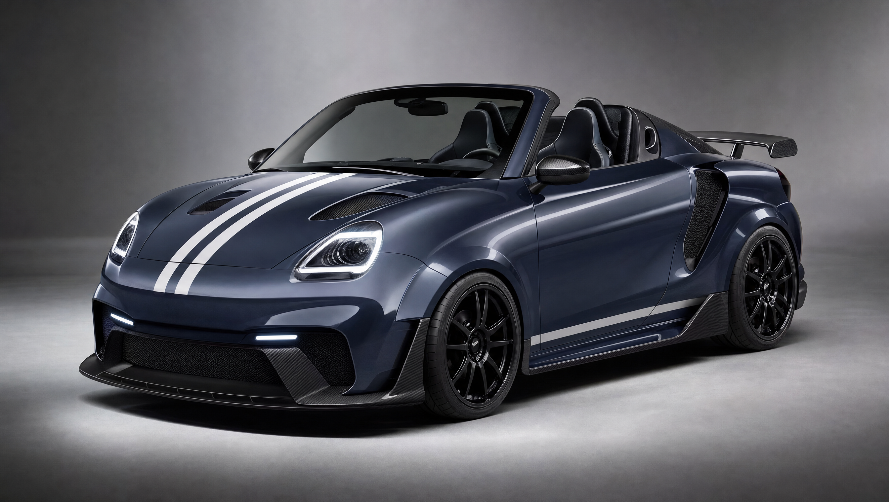

Twingo Ferrari SF90
Reel automobile généré avec Higgsfield + Seedance 2.5
Rendu keynote · 30 sÀ valider

Référence voitureRéférence avatar
Reel automobile généré avec Higgsfield + Seedance 2.5

Référence voiture